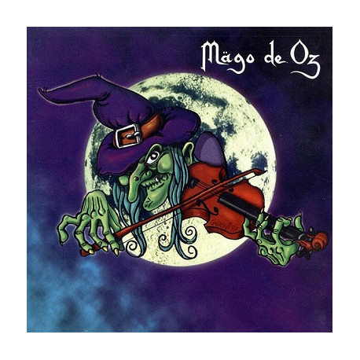

La bruja
La bruja es el primer LP de la banda, este se trata de.
Una reedición de 5 temas de su primer disco grabado bajo
la producción de Jose Andrea y Frank en 1997
- T'Esnucare contra'l bidé 4:16
- El Lago 4:25
- Gerdundula 1:46
- Lo que el Viento se Dejó 6:22
- El Hijo del Blues 4:46
- Mägo de Oz 10:43
